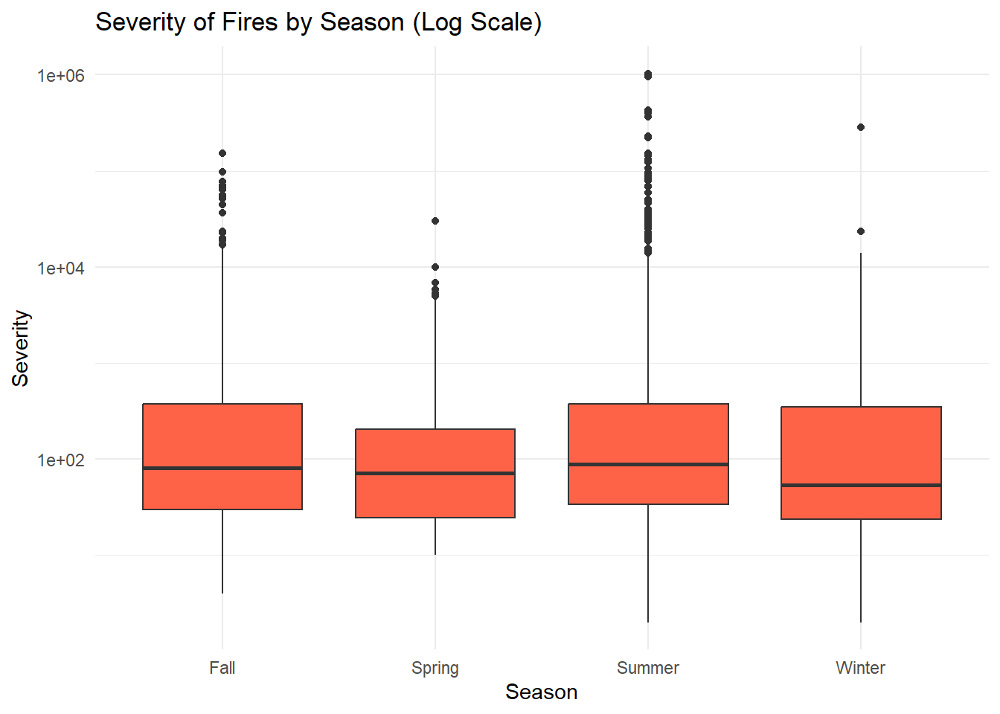

library(here)
library(readr)
library(dplyr)
library(rsample)
library(ggplot2)
library(recipes)
library(naniar)
library(broom)
library(lubridate)
library(tidyr)
library(janitor)Understanding Fire Severity in California
Motivation and Context
The devastating series of wildfires in Los Angeles County earlier this January inspired me to focus my final project on analyzing fire incidents across California counties over the past 12 years. This project aims to explore key relationships between predictor variables and the severity of wildfires, measured by acres burned, while also developing a predictive model to anticipate future fire impacts. In addition to model-building, I’m investigating several important inference questions that reflect real-world concerns:
Does the severity of a wildfire depend on the season of the year?
Are wildfires in California worsening over time in terms of severity?
Are there specific counties in California where wildfires are more likely to occur?
By addressing these questions, I hope to better understand the patterns behind wildfire behavior—an understanding that could be crucial in shaping actuarial risk models and insurance strategies in the future.
This problem is especially compelling to me because I am majoring in Mathematics with a concentration in Actuarial Science and intend to pursue the Casualty Actuarial Society (CAS) track within the Property and Casualty insurance industry. As someone preparing for a career focused on analyzing risk and uncertainty, I believe that understanding the severity of fires in California, even if only measured by acres burned, is relevant for my career. Wildfires play a significant role in shaping Homeowners Insurance, both in terms of pricing and coverage availability. By studying this issue more deeply, I hope to gain insights that will one day allow me to develop more accurate predictive models and contribute to effective risk management strategies. Understanding these patterns isn’t just academically interesting—it directly aligns with my long-term professional goals of helping insurers and communities better prepare for and respond to natural disasters.
Note: For context, it is important to note the key difference between the severity being measured in this project and the severity in insurance rate making.
In this project, we are defining severity as how destructive a fire is based on the length it impacted, disregarding other factors:
\[ \text{Severity} = \text{Amount of acres burned by a fire}\ \]
In insurance rate making, severity refers to the average cost of a claim:
\[ \text{Severity} = \frac{\text{Total Loss Amount}}{\text{Number of Claims}} \]
OBS: This clarification will definitely be helpful for actuaries and insurance professionals.
Main Objective
I believe the insights gained from my analysis should be only considered could be highly relevant for the State of California and its residents, as wildfires continue to threaten countless homes and families each year. Addressing this issue allows me to connect my career aspirations with a real opportunity to contribute to the well-being of those affected by this recurring and devastating disaster. The inferences drawn from my data analysis have the potential to inform better predictive models and encourage continuous improvement in wildfire risk assessment. Ultimately, I hope my work can serve as a small but meaningful step toward helping communities prepare for, mitigate, and recover from the growing threat of wildfires.
Packages
| Package | Function |
|---|---|
| here | to easily load and save data |
| readr | to import the CSV file data |
| dplyr | to massage and summarize data |
| rsample | to split data into training and test sets |
| ggplot2 | to create nice-looking and informative graphs |
| recipes | to define and apply data transformation steps |
| naniar | for visualizing and handling missing data |
| broom | for visualizing and handling missing data |
| lubridate | to simplify working with dates and times |
Data Description
I am using the fire incident data available at the CAL FIRE website. CalFIRE (California Department of Forestry and Fire Protection) is California’s state agency responsible for fire protection in State Responsibility Areas (SRAs), which include over 31 million acres of wild lands and areas with significant natural resources. CAL FIRE also provides emergency services in cooperation with local governments and handles forest management, fire prevention, and resource protection.
All of the agency’s information comes from the fire lines and must be approved by the Incident Commander in charge of managing the incident prior to release. The data then gets compiled by their staff and published in their website for the public to access. In their incidents page, there is a Current Emergency Incidents section where it shows fire related information such as evacuation orders and acres burned through Earthstar Geographics powered by Esri, Genasys and Perimeter. However, since I needed the whole historical fire data set to perform my analysis , I collected the CSV file, they offered.
The main reasons why they collect the fire incident data includes fastening fire responsiveness, prevention of future fires, to inform the public through statistics, and to create an incentive for more funding towards fire prevention.
OBS: It is important to note that the original excel file from CalFIRE contained significant amount of unnecessary raw data, and some wrong/outdated information. Therefore, this will be taken care of in our Data Wrangling section to ensure our Analysis is as precise and professional as possible.
original_fire <- readr::read_csv(here::here("mapdataall.csv"))
#original historical fire data from CalFIREData Limitations
CalFIRE makes it clear in their disclaimer that the data provided is intended for general reference rather than detailed scientific or emergency analysis. Therefore, important limitations must be considered when interpreting my model’s conclusions.
1) Bias in data collection: One possible source of bias is the fact that CalFIRE reportedly shared that a significant amount of small fires could go under reported, even more so if the incident burns less than 10 acres. Furthermore, another source of bias can be explained by how I performed variable selection during the modeling process. Since I got the data before specifing my linear model, I must account for selection bias.
2) Variables Mismatches: The outcome variable in our linear model, acres_burned is the only variable being used in my analysis to define the severity of the fire incidents. However, we are excluding so many crucial variables that influence a fire severity in the real-world such as structures destroyed, rural/urban differences, fire escalation, lack of firefighters, area accessibility, injuries, fatalities, more expensive/cheaper neighborhoods, total loss, and more. Plus, the variables incident_season and incident_county are very broad. I am not accounting for local weather, vegetation, source of fire, and human factors that could influence a fire behavior in the real-world.
3) Model Transferrability: My model is only accounting for fires in California in the past 12 years. Hence, the model might be inappropriate for other regions that present different weather, air humidity, terrain, biodiversity, population demographics, government funding, and more.
Data Wrangling
Data Clean Up
First of all, I must make sure this data set contains only historical fire data. CalFIRE predominantly oversee fire incidents but not exclusively. After some digging in incident_type, there were indeed two incidents reported as flood and one as earthquake. Hence, let’s remove them from our original data set and change the updated data set name for good practice.
fire_data <- original_fire %>%
filter(!incident_type %in% c("Flood", "Earthquake"))We should be worried about the observations that have missing data for the incident_type variable because what if they are not a fire incident. Hence, I made sure to check the incident_name manually to ensure all of the observations in our data set were only fire incidents.
Furthermore, since acres burned will be our response variable we must make sure we are only looking at fires that were already contained so that we know exactly how many acres were affected. Hence, the chunk below removes all the fire incidents that were still active as of May 2025. In this case, there were only three.
fire_data <- fire_data %>%
filter(!is_active %in% c("Y"))Moreover, since we are only looking at fire incidents back to twelve years ago, starting from 2013, I must apply a filter to remove the reported fires before that year. Also, I should apply a filter to remove the fires of 2025 later on when attempting to make inference about the fire severity trend over the years, because the graph might be misleading since we are in May and hence the count of fires will be significantly smaller than other years. For simplicity, I will apply those filters later on when I create the variable year. The reason why we picked 2013 as the starting year is because it is when the reporting data became regular and consistent. Before, there were only two fires incidents from 1969 and one from 2009.
Lastly, I must make sure the fire location, incident_county, is only considering California counties. After manually analyzing that variable, I did find that some reported fires are from Mexico and State of Nevada. This might have happened since the country and state are close to the border. Thus, we shall remove them manually:
fire_data <- fire_data %>%
filter(!incident_county %in% c("Mexico, San Diego", "Nevada", "State of Nevada", "Nevada, Placer"))Variable Selection
Now, let’s take a look at the variables in the original data set provided by CalFIRE and understand the variables we are working with:
head(original_fire, 20)# A tibble: 20 × 23
incident_name incident_is_final incident_date_last_u…¹ incident_date_created
<chr> <chr> <dttm> <dttm>
1 Bridge Fire Y 2018-01-09 13:46:00 2017-10-31 11:22:00
2 Pala Fire Y 2020-09-16 14:07:35 2009-05-24 14:56:00
3 River Fire Y 2022-10-24 11:39:23 2013-02-24 08:16:00
4 Fawnskin Fire Y 2013-04-22 09:00:00 2013-04-20 17:30:00
5 Gold Fire Y 2013-05-01 07:00:00 2013-04-30 12:59:00
6 Panther Fire Y 2022-10-24 11:40:03 2013-05-01 09:12:00
7 Silverado Fire Y 2013-05-01 17:15:00 2013-04-30 23:44:00
8 Yellow Fire Y 2013-05-03 06:15:00 2013-05-01 02:01:00
9 Summit Fire Y 2022-10-24 11:40:42 2013-05-01 12:38:00
10 Tres Pinos Fi… Y 2013-05-03 18:45:00 2013-05-03 11:42:00
11 306 Fire Y 2013-05-05 18:00:00 2013-05-01 19:00:00
12 Lytle Fire Y 2013-05-15 08:15:00 2013-05-13 13:30:00
13 Gorgonio Fire Y 2022-10-24 11:40:58 2013-05-04 11:43:00
14 Grand Fire Y 2013-05-21 19:45:00 2013-05-15 12:50:00
15 54 Fire Y 2013-05-17 08:30:00 2013-05-16 13:48:00
16 Lake Fire Y 2013-05-18 19:00:00 2013-05-17 13:23:00
17 Lilly 2 Fire Y 2013-05-20 19:10:00 2013-05-19 15:07:00
18 Cottontail Fi… Y 2013-05-20 19:10:00 2013-05-20 15:45:00
19 Cherry Fire Y 2013-05-20 18:50:00 2013-05-20 13:47:00
20 Water Fire Y 2013-05-21 19:30:00 2013-05-21 14:16:00
# ℹ abbreviated name: ¹incident_date_last_update
# ℹ 19 more variables: incident_administrative_unit <chr>,
# incident_administrative_unit_url <lgl>, incident_county <chr>,
# incident_location <chr>, incident_acres_burned <dbl>,
# incident_containment <dbl>, incident_control <chr>,
# incident_cooperating_agencies <chr>, incident_longitude <dbl>,
# incident_latitude <dbl>, incident_type <chr>, incident_id <chr>, …colnames(original_fire) [1] "incident_name" "incident_is_final"
[3] "incident_date_last_update" "incident_date_created"
[5] "incident_administrative_unit" "incident_administrative_unit_url"
[7] "incident_county" "incident_location"
[9] "incident_acres_burned" "incident_containment"
[11] "incident_control" "incident_cooperating_agencies"
[13] "incident_longitude" "incident_latitude"
[15] "incident_type" "incident_id"
[17] "incident_url" "incident_date_extinguished"
[19] "incident_dateonly_extinguished" "incident_dateonly_created"
[21] "is_active" "calfire_incident"
[23] "notification_desired" We can see there are some unnecessary variables that can be removed from this data set because they will be irrelevant to our analysis. More specifically:
incident_is_final- I am only considering incidents that are final because days active is one of my predictor variables. Plus, there were only 3 fires that were active on the data set. They will be deleted in the chunks below.incident_date_last_update- Irrelevant for our analysis since fires considered are final.incident_county- I modified this variable to only include counties in California.incident_location- This column described the location of the fire, some cells described which freeway, other cells described off of which street, other cells gave more estimations (i.e. near the 4500 block of Chuckwagon Drive, Copperopolis). It would be very ambitious to consider this a variable.incident_containment- This column showed what percentage of the fire was contained, while 2794 out of 2864 were contained, the data showed 70 cells with missing data or less than 100% contained. However, this seems to be a variable that was not updated because all of those 70 fires were extinguished already, hence they have to have been contained.incident_longitudeandincident_latitude- Irrelevant for our analysis, no need for the location of the fire to be this specific.incident_type- The original data set did contain two floods and one earthquake incidents that I deleted for the polished excel file. Also, this variable differentiated fire from wildfire. Since we are not getting that specific I decided to drop this variable as well.incident_date_extinguishedandincident_dateonly_extinguished- I was going to use this variable to calculate for how long each fire has been active. However, after some digging, I found multiple inconsistencies in the reportedly duration of the fire. Some of them showed that they were active for more than a year! Plus, I found that if we considerincident_date_extinguished, near half of the fires supposedly were active for more than 60 days, which does not sound reasonable at all. However, I did not lose hope with this data set from CalFIRE because theincident_date_createdhas been precisely accurate with every fire I researched on my own. Similarly withacres_burned.incident_date_created- Repetitive, we already haveincident_dateonly_created.incident_administrative_unit,incident_administrative_unit_url,incident_control,incident_cooperating_agencies,incident_id,incident_url,calfire_incident,notification_desired- Irrelevant for our analysis.
Let’s create a new data set with those variables removed:
fire_data <- fire_data %>%
select(-c(incident_is_final, incident_date_last_update, incident_location, incident_containment, incident_longitude, incident_latitude, incident_type, incident_date_extinguished, incident_dateonly_extinguished, incident_administrative_unit, incident_administrative_unit_url, incident_control, incident_cooperating_agencies, incident_id , incident_url, calfire_incident, notification_desired, incident_date_created, is_active))
# To remove all the variables we deemed unecessary.Now that we have removed those unnecessary variables. Let’s extract other interesting variables from the given ones and perhaps change their names for our data set to look more professional. For example, from the date the fire was created we can extract the year, the month, and the season that fire originated. Hence, here are the variables we are generating from the given data:
year- what year the fire originated.month- what month the fire originated in numeric form.season- what was the season when the fire originated.multi_county- whether the fire has affected more than one county.is_complex- a fire is called a “complex” when two or more fires burn in the same general area and are managed under a single incident command or unified command.
fire_data <- fire_data %>%
mutate(
year = year(incident_dateonly_created),
month = factor(month(incident_dateonly_created),
levels = 1:12,
labels = c("Jan", "Feb", "Mar", "Apr", "May",
"Jun","Jul", "Aug", "Sep", "Oct",
"Nov", "Dec")),
season = case_when(
month %in% c("Dec", "Jan", "Feb") ~ "Winter",
month %in% c("Mar", "Apr", "May") ~ "Spring",
month %in% c("Jun", "Jul", "Aug") ~ "Summer",
month %in% c("Sep", "Oct", "Nov") ~ "Fall",
TRUE ~ NA_character_
),
multi_county = grepl(",", incident_county),
is_complex = grepl("Complex", incident_name)
)Now we can easily apply the filter to year and only consider fires from 2013 and on by
fire_data <- fire_data %>%
filter(year >= 2013)Now, let’s change some of the variables names for aesthetic:
fire_data <- fire_data %>%
rename(
name = incident_name,
county = incident_county,
severity = incident_acres_burned,
date = incident_dateonly_created,
)Finally, let’s take a look at our updated and clean data set. We are now one step closer to perform our Analysis.
head(fire_data, 20)# A tibble: 20 × 9
name county severity date year month season multi_county is_complex
<chr> <chr> <dbl> <date> <dbl> <fct> <chr> <lgl> <lgl>
1 Bridge… Shasta 37 2017-10-31 2017 Oct Fall FALSE FALSE
2 River … Inyo 407 2013-02-24 2013 Feb Winter FALSE FALSE
3 Fawnsk… San B… 30 2013-04-20 2013 Apr Spring FALSE FALSE
4 Gold F… Madera 274 2013-04-30 2013 Apr Spring FALSE FALSE
5 Panthe… Tehama 6896 2013-05-01 2013 May Spring FALSE FALSE
6 Silver… Napa 75 2013-04-30 2013 Apr Spring FALSE FALSE
7 Yellow… Sonoma 125 2013-05-01 2013 May Spring FALSE FALSE
8 Summit… River… 2956 2013-05-01 2013 May Spring FALSE FALSE
9 Tres P… San B… 354 2013-05-03 2013 May Spring FALSE FALSE
10 306 Fi… Glenn 217 2013-05-01 2013 May Spring FALSE FALSE
11 Lytle … San B… 75 2013-05-13 2013 May Spring FALSE FALSE
12 Gorgon… River… 650 2013-05-04 2013 May Spring FALSE FALSE
13 Grand … Kern,… 4346 2013-05-15 2013 May Spring TRUE FALSE
14 54 Fire River… 40 2013-05-16 2013 May Spring FALSE FALSE
15 Lake F… Los A… 712 2013-05-17 2013 May Spring FALSE FALSE
16 Lilly … Madera 91 2013-05-19 2013 May Spring FALSE FALSE
17 Cotton… San L… 35 2013-05-20 2013 May Spring FALSE FALSE
18 Cherry… River… 25 2013-05-20 2013 May Spring FALSE FALSE
19 Water … River… 90 2013-05-21 2013 May Spring FALSE FALSE
20 Shelto… San J… 303 2013-05-30 2013 May Spring FALSE FALSE colnames(fire_data)[1] "name" "county" "severity" "date" "year"
[6] "month" "season" "multi_county" "is_complex" Exploratory Data Analysis
In this section, we will explore our variables by looking at their distributions and relationship between our categorical variables and our response variable, severity.
Missing Data
Before exploring our variables, we must address how much of the data is missing and how can we tackle this problem.
fire_data |>
miss_var_summary()# A tibble: 9 × 3
variable n_miss pct_miss
<chr> <int> <num>
1 severity 51 1.80
2 county 10 0.354
3 name 0 0
4 date 0 0
5 year 0 0
6 month 0 0
7 season 0 0
8 multi_county 0 0
9 is_complex 0 0 Hence, we have 61 missing data points in total in our data. More precisely, 51 reports missing for severity (acres burned) and 10 reports missing for county (fire incident county), which represents about 1.80% and 0.35% of those variables, respectively, total reported data. Therefore, this is a good sign that our data set has barely any data missing. We could even visualize how insignificant the missingness is related to our overall data,
vis_miss(fire_data, cluster = TRUE, sort_miss = TRUE)
gg_miss_upset(fire_data,
nsets = 9)
Therefore, approximately 2% of the data had missing values. I opted to remove those rows. This avoids the need for potentially biased imputation of the target variable, with methods such as Mean/Median/Mode, linear model, or softImpute. The small proportion of missing data will not significantly impact our overall analysis.
Moreover, we it is plausible to ignore the missing data because the “upset” plot indicated that the variables do not tend to be missing together. Hence, this strengthen, but does not prove, our assumption that the data can be treated as Missing Completely at Random (MCAR).
fire_data <- fire_data %>%
drop_na() fire_data |>
miss_var_summary()# A tibble: 9 × 3
variable n_miss pct_miss
<chr> <int> <num>
1 name 0 0
2 county 0 0
3 severity 0 0
4 date 0 0
5 year 0 0
6 month 0 0
7 season 0 0
8 multi_county 0 0
9 is_complex 0 0Hence, we now have a clean data set with 2,765 fire incidents across California with no missing data.
Data Split
Furthermore, we should split the data into a training set (fire_train) and test set (fire_test). The recommended amount of data in the training set is roughly 80% for a random split, thus we shall follow that. We must apply this split for several reasons, more importantly, to prevent over fitting and to evaluate/compare models accurately. Our test set is extremely important because it acts like “new” data, helping us check if the trained model generalizes. Also, since we are planning on making inference claims, we must make sure our model’s conclusions are not specific to the training set only.
set.seed(100)
n <- nrow(fire_data)
train_indices <- sample(n, size = floor(0.8*n))
fire_train <- fire_data[train_indices,]
fire_test <- fire_data[-train_indices,]Exploring Variables
Let’s take a look at our response variable:
fire_train |>
summarize(
num_total = n(),
mean = mean(severity),
sd = sd(severity),
min = min(severity),
Q1 = quantile(severity, 0.25),
median = median(severity),
Q3 = quantile(severity, 0.75),
max = max(severity)
)# A tibble: 1 × 8
num_total mean sd min Q1 median Q3 max
<int> <dbl> <dbl> <dbl> <dbl> <dbl> <dbl> <dbl>
1 2212 4320. 37221. 0 30 83 338 1032648Hence, this tell us that from the 2,236 fires observed in our training set, 50% of them burned between 30 and 357 acres, with 25% of fires burning less than 30 acres and 25% of fires burning more than 357 acres. Notice how the average (mean) of acres burned is around 4,556 acres which is much higher than the median of 85 acres. This implies that half of the fires burn 85 acres or less, however there are a few massive fires (outliers) that are significantly shifting the average. Plus, the standard deviation is extremely high, around 38,000 acres. This suggests a very strong right skewness for the distribution of severity . Furthermore, notice how we have observations of fires that burned 0 acres and a fire that was able to reach the incredible 1,032,648 acres mark. This extreme difference between fire severity explain the variability in the data, together with he standard deviation. In fact, in other to show the plot of severity we need to apply a log scale to compress those extreme values and allow us to interpret the full distribution of severity .
ggplot(fire_train, aes(x = severity)) +
geom_histogram(bins = 70, fill = "tomato", color = "black") +
scale_x_log10() +
labs(title = "Distribution of Fire Severity (Log Scale)", x = "Severity", y = "Count of Fires") +
theme_minimal()As predicted, severity has a clear right-skewed distribution. Here is how to interpret the Logarithmic Scale:
| Notation | Acres Burned |
|---|---|
| 1e+01 | 10 |
| 1e+02 | 100 |
| 1e+03 | 1,000 |
| 1e+04 | 10,000 |
| 1e+05 | 100,000 |
| 1e+06 | 1,000,000 |
Now, let’s compare the severity of the fires by season of the year:
ggplot(fire_train, aes(x = season, y = severity)) +
geom_boxplot(fill = "tomato") +
scale_y_log10() +
labs(
title = "Severity of Fires by Season (Log Scale)",
x = "Season",
y = "Severity"
) +
theme_minimal()
Hence, we can see that the median fire severity appears consistent across the seasons, with about half of the fires in each season burned around a little below 100 acres. However, Fall and Summer demonstrate to have the most outliers (extreme fire events) with fire severity well above 10,000 acres and even reaching up to over 1,000,000 acres, in Summer. This strongly suggests that while the typical size of fires in our training set do not vary much across seasons, the most severe fires tend to happen during Summer and Fall.
fire_train |>
group_by(season) |>
summarize(
num_total = n(),
mean = mean(severity),
sd = sd(severity),
min = min(severity),
Q1 = quantile(severity, 0.25),
median = median(severity),
Q3 = quantile(severity, 0.75),
max = max(severity)
)# A tibble: 4 × 9
season num_total mean sd min Q1 median Q3 max
<chr> <int> <dbl> <dbl> <dbl> <dbl> <dbl> <dbl> <dbl>
1 Fall 477 2751. 11919. 0 30 80 376 153336
2 Spring 266 521. 2129. 0 22.2 70 201. 30274
3 Summer 1400 5529. 45597. 0 33 86 352. 1032648
4 Winter 69 5269. 33985. 0 22 50 333 281893More precisely, we can also notice how many more fires happened in California during Summer compared to the other seasons, representing almost 64% of the amount of fires in our training set.
ggplot(fire_train, year < 2025, aes(x = year, y = severity)) +
geom_point(alpha = 0.3) +
geom_smooth(method = "loess") +
scale_y_log10() +
labs(title = "Fire Severity Over Time", y = "Acres Burned (Log Scale)"
)Our choice of alpha here, “alpha = 0.3” is to reduce the opacity of the data points and make them more readable.
Extreme Fires
Although, let’s analyze how much does multi_county and is_complex variables are affecting our results. Hence, let’s analyze if the extreme fires, the ones that affect multiple counties and that become complex are skewing our results. It’s plausible to assume they might skew our data since it would make sense that those extreme fires might have big severity, most likely burn more acres than others. Thus, let’s explore further: